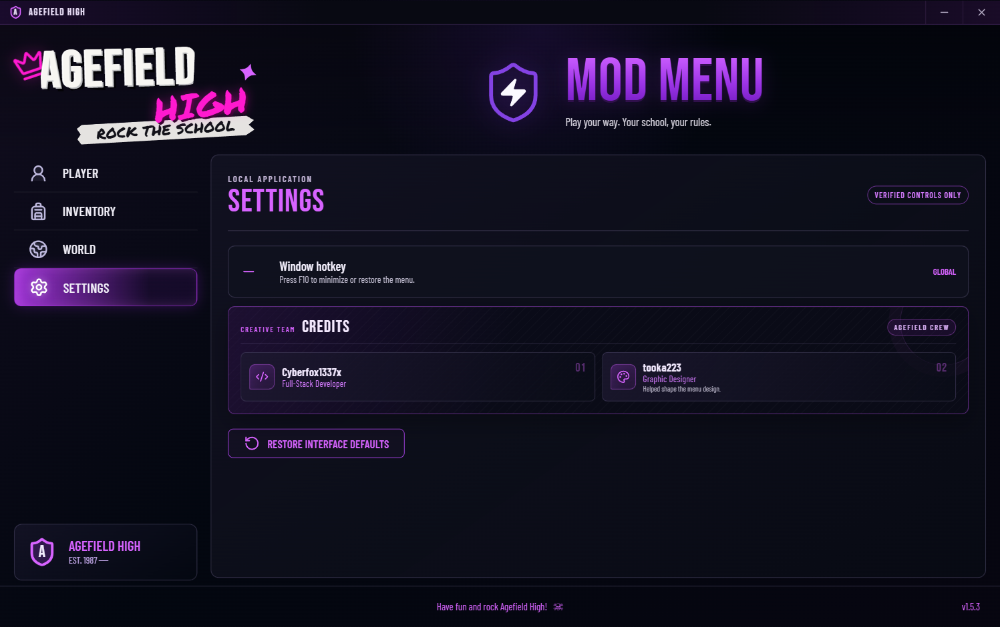

The first problem was not the menu
Agefield High is an Unreal Engine 5.3 game. There is no regular project source sitting next to the shipping executable, and asset names alone are not enough to tell me that a property is safe to write. A Blueprint name can show that something probably exists, but it does not prove the live class, function signature, object lifetime, or restoration behavior.
That meant I could not begin by wiring every button from the reference design to a guess. I first had to separate three different things: what looked good in the menu, what appeared in cooked data, and what the running official build could prove.
- The application layer had to stay isolated from the game and render the complete 1500 by 940 design without scrollbars.
- The runtime layer had to accept only exact commands that were verified against the current game session.
- The installer had to prove the Steam build and executable hash before it copied a single runtime file.
Seeing a name in FModel or an SDK dump was treated as discovery evidence, not permission to build a working control around it. A feature did not ship until I had a live contract, read-back, and a way to put the original state back.
Proving the build before touching it
I worked against the official Steam installation, App ID 3562580, build 24987926. The shipping executable is checked against its exact SHA-256 instead of trusting the folder name. That prevents the installer from assuming a renamed folder, incomplete copy, older game version, or unrelated executable is supported.
The runtime gate also rejects a running game, partial loader installations, conflicting proxy DLLs, unknown UE4SS bytes, repack or Steam-emulation markers, and the old non-Steam path that had already failed provenance checks.
# The installer fails closed before copying anything
App ID 3562580
Build ID 24987926
Executable exact SHA-256 match required
Runtime UE4SS v3.0.1 exact payloadThe official manifest, build, install directory, executable hash, and complete 25-file runtime payload are checked before installation. A failure ends the transaction instead of trying to continue with a partial setup.
Keeping the desktop app away from the game process
I did not put the user interface inside the game. The menu is a separate Electron application with a sandboxed renderer. It has no Node.js access, cannot browse the filesystem, cannot open random links, and cannot send arbitrary runtime commands.
The application and the Lua bridge exchange short command and response files in the current user's temporary directory. Every message is bound to the current game session, both sides maintain the same allowlist, and the application only reports success after the game returns a verified acknowledgement.
React renderer
Draws the full menu and exposes only the controls advertised by the live capability manifest.
Electron boundary
Validates action, detail, session, file name, and timeout before serializing one command.
UE4SS Lua bridge
Runs the verified Unreal call, reads the result back, and returns an exact response.
// Unknown commands never reach the game
if (!capabilities.has(`${action}:${detail}`)) {
return { ok: false, message: "Unsupported command." };
}Making every control reversible
A mod control is easy to turn on once. The harder part is turning it off without leaving the save or player in a modified state. I treated the off path as part of the feature instead of something to add later.
Unlimited Money is one example. Writing an arbitrary large value caused the HUD to wrap to -9999. The final control uses a HUD-safe 9,999 target and exact AddCurrency or RemoveCurrency deltas. The disable path restores a captured non-negative baseline rather than guessing what the user had before.
The same pattern is applied to walking speed, stamina consumption, collision, visibility, AI perception, gravity, movement mode, and input ownership. Reset Player also releases every state the menu owns.
A toggle that changes a value but cannot prove the value was restored is not complete. Every shipped toggle has an off path, and the desktop status is synchronized from the runtime instead of assuming a click worked.
Fixing teleports that dropped the player
The first teleport accepted the destination marker's Z value as success. That was wrong. Unreal World Partition can stream the marker before the nearby floor is ready, which is how a teleport can report the correct coordinates while the character falls through the map.
The final path temporarily uses Flying with collision disabled while the area loads. It traces downward for a blocking, upward-facing surface, adds the current capsule half-height, places the player, restores Walking and collision when appropriate, and waits through five grounded dwell checks before returning success.
If the floor never validates, the bridge restores the last safe location. Return uses the safe position saved immediately before the teleport instead of whatever coordinate happened to be written last.
Agefield High, Home, Police Station, General Store, and Cloth Shop each passed grounded location read-back and Return testing in the development runtime. The packaged installer path still has the final physical acceptance check listed below. Sixteen additional markers stayed unpublished because I did not finish individual destination and return QA for them.
Cutting No Clip overhead without building a lag machine
The first smooth-flight attempt used a permanent high-frequency loop that kept writing velocity. It worked, but it was exactly the kind of approach that can turn a small feature into a CPU problem.
The v1.5.5 bridge is event-driven. Key edges arm a 50 ms input monitor only while flight input is present. CharacterMovement sustains the velocity between checks, and a new velocity is written only when the input signature or travel yaw changes. Releasing a key stops movement immediately and clears queued input.
- W, A, S, and D are facing-relative and the character rotates into horizontal travel.
- Space moves up and Z moves down.
- The monitor self-stops when no flight input remains.
- Main-menu activation is rejected and stale Pawn references are cleared across map changes.
Inactive counters stayed flat, forward travel matched the expected and facing vectors at 1.000, collision restored after disabling, and every pending closure returned to zero. The lightweight 150 ms command poll is the only bridge worker that remains active while idle. Final packaged pacing remains an explicit physical acceptance item below.
The menu itself
The reference had the energy I wanted: a school hallway after dark, distressed Agefield branding, and violet controls that look more like stage lighting than a Windows utility. I rebuilt that as one frameless application surface rather than placing a website inside a normal window frame.
The entire 1500 by 940 canvas scales as one unit down to the supported 900 by 564 window. Nothing reflows into a second layout, sections do not disappear, and the document never creates a scrollbar. F10 minimizes or restores the real Windows application globally.

Player
Nine reversible character toggles, Reset Player, Heal Player, and Clear Wanted.
Inventory
Eight verified item definitions and exact-count restoration for items spawned during the session.
World
Five grounded destinations, Return, Time of Day, and school-day time shortcuts.
Settings
F10 window control and one focused credits card for Cyberfox1337x and tooka223.
One installer, but not a reckless installer
The Setup EXE contains the Electron application, UE4SS v3.0.1, the Lua bridge, the exact production settings, the license, backup logic, update handling, and uninstall restoration. The person installing it does not need Node.js, npm, Python, Lua, Cheat Engine, FModel, or a separate UE4SS download.
On a clean game it installs the complete reviewed payload. If the exact supported UE4SS loader is already present, it changes only the two required hook values and three mod-registry entries. Unrelated settings and mods are preserved.
Before copying files, it records the original state under ProgramData. Copies are atomic, every managed file is read back and hashed, and a failed first transaction removes only what the transaction created. Uninstall restores the Agefield-owned values while preserving unrelated edits made afterward.
The installer does not install Steam, the base game, or missing Windows system runtimes. It requires the supported official Steam build, administrator approval, the game to be closed, and enough space for the application plus its backups.
What is actually in the project
The application is TypeScript, TSX, CSS, Electron CommonJS preload code, PowerShell, NSIS, and Lua. ESLint passes with zero warnings, all 26 Vitest checks pass, the PowerShell installer fixtures pass traversal, merge, rollback, and update scenarios, the Lua parses, and the packaged file hashes match their sources.
Things I still need to finish
I do not want to call a runtime gate complete just because the source and packaging checks passed. These are the remaining acceptance items for this build:
- Run the final Setup through its normal elevated UAC lifecycle. The payload, merge, rollback, packaging, and extracted hashes are verified, but the final per-machine install still needs its ordinary live acceptance pass.
- Physically recheck No Clip pacing after restart. The scheduler and direction proofs passed, but the final v1.5.5 smoothness and lag gate still needs a human gameplay pass.
- Physically recheck teleport landing and Return. The grounded algorithm passed prior live tests; the packaged post-fix path still needs final acceptance after installation.
The installer is packaged and the controls are based on verified contracts. The three acceptance items above remain visible because I am not replacing an unfinished physical test with a claim that everything is perfect.
Source and download
The source repository contains the desktop application, production bridge, installer, tests, and this build article. Game files, saves, private analysis, credentials, and generated release directories are excluded.
The installer supports the official Steam App ID 3562580, build 24987926 only. It is currently unsigned, so Windows SmartScreen may show an unknown-publisher warning. The release checksum is published beside the download.